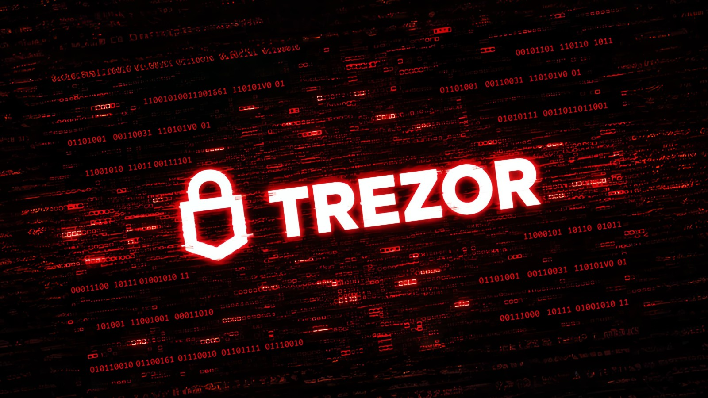

Компания Trezor опубликовала итоги расследования, которое началось в октябре: покупатель из Индонезии обнаружил внутри купленного Safe 5 постороннюю плату. Теперь лаборатория изучила устройство и нашла ещё два таких же — по фотографиям, которые прислали владельцы. Все три кошелька куплены у реселлера CryptoBilis (магазины на Tokopedia и Shopee и прямые продажи) в период с 20 августа по 23 сентября 2026 года.
Инженеры Trezor извлекли и разобрали прошивку жучка. Это дополнительная плата, установленная между основной платой Safe 5 и дисплеем. Она работает «на прослушку»: копирует всё, что появляется на экране и что пользователь вводит на устройстве, ничего при этом не меняя — ни прошивку, ни Secure Element. Когда на экране возникают сид-слова (при создании нового кошелька или при восстановлении существующего), имплант распознаёт и сохраняет их, а следом пароли-фразы. Дальше шифрует добычу и передаёт на сервер атакующих через сотовую сеть. Если связи нет — копит данные и упрямо повторяет попытки, пока не достучится. Схема точь-в-точь как в имплантах Ledger, которые нашли ранее устройствах того же реселлера.
Хорошая новость: ни один владелец заражённого Safe 5 не потерял средства. После октябрьского предупреждения к Trezor обратились 48 покупателей CryptoBilis — устройства проверяют в лаборатории или по фото внутренностей. У других реселлеров в регионе подделок не нашли, как и среди других моделей Trezor.
11 ноября вышла прошивка 2.13.1 с защитой, которая не даёт имплантам ничего считывать — текущая партия жучков становится бесполезной. Но производитель честно предупреждает: если сид-фраза успела утечь до обновления, прошивка не поможет, — покупавшим у CryptoBilis нужно перенести средства на новый кошелёк с новой сид-фразой. Каждому, кто купил Trezor у CryptoBilis с марта 2026 года, обещан бесплатный заменный девайс (или компенсация, если модель не доставляется в страну). Кроме того, Trezor сократила сеть реселлеров примерно на 80%: исключённые партнёры названы надёжными, но новым жёстким требованиям цепочки поставок они не соответствуют.
Классическая атака на цепочку поставок: сам производитель не при чём, но «чистый» с завода прибор превращают в шпиона в магазине посредника. Владелец аппаратного кошелька получает от производителя ровно то, что должен, — и всё равно рискует. Защита здесь простая: покупать только на официальном сайте производителя, а при первом запуске нового кошелька насторожиться, если устройство ведёт себя странно или «думает» дольше обычного. Проверить имплант без вскрытия нельзя — только по косвенным признакам, поэтому Trezor и меняет устройства всем покупателям сомнительного реселлера, даже не подтверждённым.